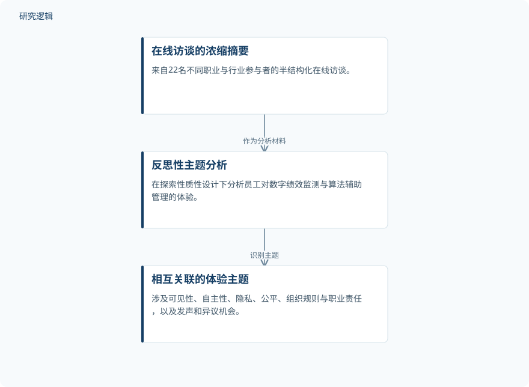

摘要解读
算法管理的人本面向：员工如何应对人工智能绩效监测、自主性、隐私与职场信任
The Human Side of Algorithmic Management: Exploring How Employees Negotiate AI-Driven Performance Monitoring, Autonomy, Privacy, and Workplace Trust
解读更新 2026-11-17 11:36 · 依据公开摘要整理，未核验全文细节
数字绩效监测如何兼顾管理需求与员工的自主、隐私和信任？这项来自巴基斯坦职场的探索性研究，将阅读重点放在一个关键区别上：主管愿意理解员工，并不等于组织已经提供可靠的制度保障。
文章目录
绩效被看见之后，员工如何保留自主空间
研究关注巴基斯坦员工如何体验并协商数字绩效监测与算法辅助管理，围绕自主性、隐私、公平和职场信任展开。它讨论的不是算法预测是否准确，而是员工如何理解监测、面对指标要求，以及表达对评价结果的异议。
从在线访谈浓缩摘要中识别员工体验主题
作者采用探索性质性研究设计，分析材料来自22名参与者的半结构化在线访谈浓缩摘要，覆盖不同职业与行业情境。研究使用反思性主题分析，识别出相互关联的体验主题。这里需要保留材料层级：摘要明确说的是访谈的浓缩摘要，不能直接表述为对完整访谈逐字稿的分析。
依据摘要整理的访谈材料分析过程


仅呈现摘要明确说明的材料与分析关系，是摘要整理示意图，不是论文原图，也不表示因果验证。
下载 SVG图示关系说明
实线表示相邻阶段的信息流，虚线表示跨阶段联系或反馈。
在线访谈的浓缩摘要 → 反思性主题分析：作为分析材料；反思性主题分析 → 相互关联的体验主题：识别主题
认可监测用途，不等于接受所有评价方式
分析识别出六个相互关联的主题：协商工作可见性、指标约束下的自主性、隐私边界、依赖主管的公平、组织规则与职业责任，以及员工发声和提出异议的机会。这些主题呈现了员工与监测制度之间不止于支持或反对的复杂关系。
参与者总体认可监测在改善协调、明确绩效期望和支持合规方面的益处，同时担忧评价未充分考虑具体情境、行为压力、数据实践不清晰，以及质疑评价结果的机会有限。这些是访谈中报告的认识与体验，不应改写为监测已被客观证明能够提升绩效。
摘要强调，支持性的主管关系不等于可靠的组织保障。主管可能提供解释并考虑工作情境，但员工仍需要透明的复核权限、得到认可的纠错程序、明确的隐私边界，以及便于表达关切的渠道。研究据此提出更透明、更重视情境和更可问责的监测建议，并未在摘要中报告这些建议实施后的效果。
探索性发现的适用边界仍需进一步阅读
仅凭摘要，无法判断参与者如何招募、各职业与行业的样本分布、所接触监测系统的差异，以及浓缩摘要保留了多少访谈语境。摘要也未交代跨群体比较、主题解释的验证过程或制度建议的效果验证范围；这些信息未报告，不代表论文没有开展相关工作，也不足以将发现推广至所有职场。
阅读启发：把主管解释与组织纠错分开看
阅读启发：进一步阅读时，可重点追问员工如何区分“主管愿意解释”与“组织允许纠错”，以及隐私边界和异议渠道如何被实际体验。若关注AI智能运维，也可将其作为涉及人员绩效监测时的治理问题提示，而不能把本文当作故障诊断、预测维护或设备可靠性效果的证据。
以上为本站阅读启发与建议，不是论文已验证的结论。